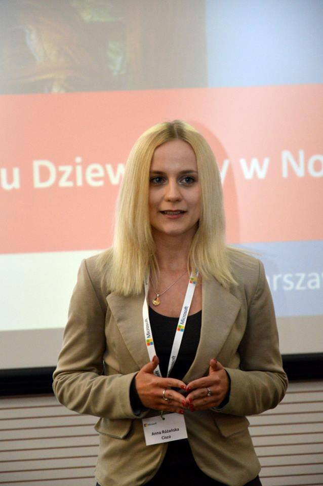
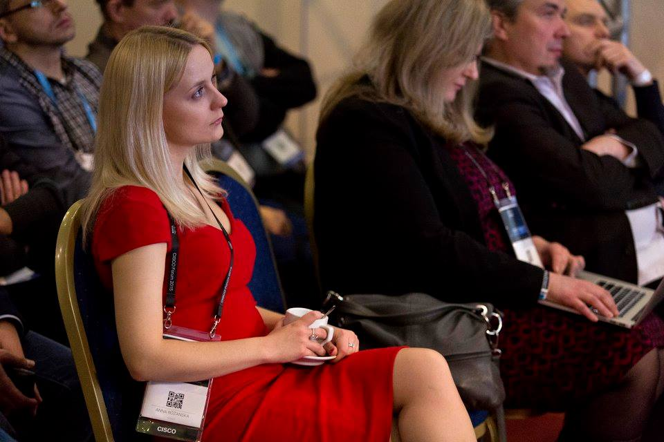

Working Experience:
Consulting Engineer in Cisco Systems (2016-now)
- Implementing Unified Communications Solutions (CUCM, CUC, IMP, CUBE, Expressways, CMS, IP Phones, Videoterminals etc)
- Providing knowledge transfer and documentation to my customers (High Level Design, Low Level Design, Network Ready for Use, Proactive Software Recommendation Report, Potential Product Security Vulnerabilities Report - PSIRT, Customer Requirements Document etc)
- Analyzing existing collaboration networks and recommending solutions including the setup, configuration and testing based on industry best practices
- Developing and maintaining relationships with customers and internal teams
- Delivering training to new employees
- 3 months of rotation in Cisco TAC Collaboration Internship in Cisco Systems (2014-2016)
- Coordination of Cisco Universe 2015/2016 (an educational program for 500 polish customers and partners)
- Preparation of Cisco devices in a laboratory for customers to try it out
- Organization of Cisco Forum and Cisco Secure
- Working with systems engineers and sales specialists in their everyday work
Internship in Cisco Systems (2014-2016)
- Coordination of Cisco Universe 2015/2016 (an educational program for 500 polish customers and partners)
- Preparation of Cisco devices in a laboratory for customers to try it out
- Organization of Cisco Forum and Cisco Secure
- Working with systems engineers and sales specialists in their everyday work
Education
Vistula University (2012-2015)
Engineer’s Degree in Computer Science.
Specialisation in computer networks.
Medical University of Warsaw (2010-2013)
Bachelor of Science in Nursing.
Thesis on telemedicine.